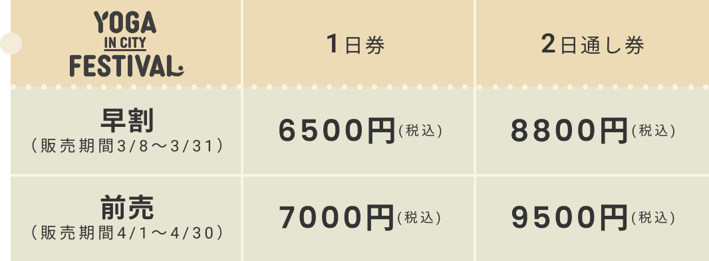

YOGA in CITY FESTIVAL
〜ヨガで繋がる、わたしと街。〜
ゆったりとした暮らしが理想だけれど、都会で過ごす毎日は、
なんだかいつも慌ただしい。ふと気付くと、自分と向き合う時間や、
心やからだを癒す時間を忘れてしまっていませんか？
「YOGA in CITY FESTIVAL」は、ヨガ・食・音楽が融合する新しいカタチのアウトドアイベント。
都会で生きる皆さんに安らぎを届け、心が向かいたい場所を示してくれる。
そんな2日間をお届けします。
呼吸を整え、自分とゆっくり向き合う時、本当のわたしが見えてくる。
そしてその時、この街はいつだってあなたの味方だと気付くでしょう。
ABOUT
YOGA in CITY FESTIVALは、「ヨガ×食×音楽」を楽しむ東京最大規模のアウトドアヨガイベントです。
自然豊かな東京デイトラ公園で、記念すべき第1回目を開催いたします。
CONTENTS
HOW TO ENJOY
イベントの楽しみ方
GUEST
TICKET
早割がおトク

ACCESS
※詳しくはデイトラ公園公式サイト
（daytora-park.com）をご確認ください。
※公園に関するお問い合わせ：00-1234-5678